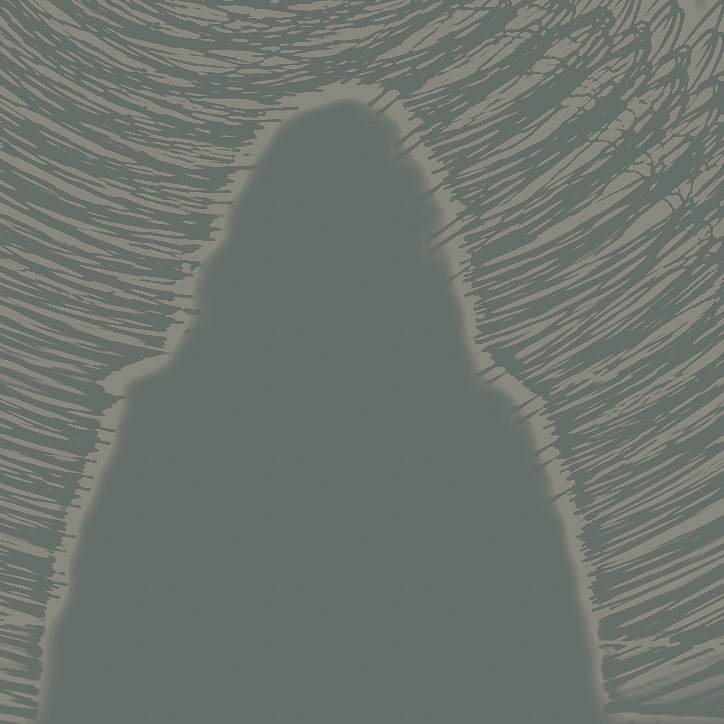

‘’Influencer hebben nu de hele wereld’’
Influencers ontwikkelen de reclame van morgen
‘‘Everyone is the other and no one is himself’’ -Martin Heidegger. Een uitspraak die mij best wel aan het denken heeft gezet. Waarom? Iets wat wij overal om ons heen horen is ‘’Wees jezelf, dan komt alles goed’’. Maar kan dit in onze samenleving überhaupt nog wel? Of worden wij gevormd en moeten we met de samenleving mee om ons staande te houden…?
Prikkels
Hoe komt het dat wij ons zo laten vormen? Heel simpel lijkt me. Overal om ons heen is design en technologie. Overal zijn prikkels die ons kunnen vormen en dat begint al 's ochtends aan de ontbijttafel. Hier lees je de krant. Er komt informatie bij je binnen. Maar ook op het station hangen overal posters, op de sportvereniging, op school en op social media. Overal zijn prikkels (Hersenstichting,2017).
Hoe erg worden wij beïnvloed?
Tegenwoordig zijn platvormen als YouTube en Netflix erg in trek. Influencers kunnen vaak tot wel miljoenen volgers hebben. Kinderen van ongeveer 5 jaar beginnen al met kijken naar YouTube filmpjes van meisje Djamila of Dylan Haegens. Vaak wordt er in deze filmpjes iets aangeraden van een bepaald knutselproduct. Als de influencer daar echt enthousiast over is, dan heeft dit invloed op de kinderen. Waarom? Omdat meisje Djamila vertelde dat dat product goed was, dus vinden de kinderen het ook goed. Schogt publiceert in een blog dat uit een onderzoek, door onderzoeksbureau Nielsen, blijkt dat 84 procent van de consumenten aanbevelingen van familie en vrienden als invloedrijk en betrouwbaar zien (Nielsen & Norman, 2016). Influencers bouwen ook een bepaalde relatie op met hun volgers. Betekent dit dan ook dat zij een groot deel van hun volgers kunnen beïnvloeden (Schogt, 2016)?‘’Influencer hebben nu de hele wereld’’
-Babette Thissen
Worden influencers de nieuwe reclame?
De gemiddelde mens kijkt steeds minder tv. Vooral de jongeren die het snelst beïnvloedbaar zijn zoals je ziet in de onderstaande grafiek die de heer Bakker heeft gepubliceerd (Bakker, 2019). Zijn bron voor deze grafiek is de SKO (Stichting Kijkonderzoek). Dit betekent dat reclame ook steeds minder gezien wordt. Bedrijven zullen dus op een andere manier hun producten bij de massa onder de aandacht moeten brengen. Dit doen ze tegenwoordig door producten op te sturen naar influencers in de hoop dat zij dit onder de aandacht brengen in een video. Dit wordt tegenwoordig affiliatie marketing genoemd. Een influencer is veel persoonlijker dan reclame op tv. Dit resulteert erin dat mensen de producten veel sneller gaan kopen. En ik moet zeggen, ik ben er ook schuldig aan.
Zal visuele reclame verdwijnen?
Maar zullen dan ook de posters en andere visuele communicatie verdwijnen? Uit een interview met expert Babette Thissen, werkende als designer voor de keten Jan Linders,(persoonlijke communicatie, 16 oktober 2019) nam ik aan dat dit waarschijnlijk nooit zal verdwijnen, maar dat het wel gaat veranderen. Misschien geen posters meer in abri’s, maar digitale schermen waarop de reclame voorbij flitst. Want zie je al een vrachtauto voor je, helemaal zwart of wit, zonder reclame? Nee. Reclame zal volgens haar altijd blijven.Zijn influencers designers?
Deze vraag zal voor iedereen een ander antwoord op leveren en dus ook een aantal interessante discussies. Influencers maken filmpjes of foto’s voor op hun Instagram account, dus is dit design? Als je het aan mij vraagt niet echt. Ik legde dezelfde vraag voor aan expert Babette Thissen. Zij reageerde hier wel interessant op. Ze was het met me eens. In eerste instantie zijn zij niet het stereotype designer, maar als je er verder op ingaat zijn zij wel designers. Influencers blijven nadenken over de achtergrond, kleurenmatch, huisstijl, de typografie moet er goed bij passen, wat krijgt de hoofdrol, wat is bijzaak. Ze maken gebruik van artwork in hun video’s. Ook dit is design. Eigenlijk zaken waar mensen als graphic designers of visuele designers zich ook mee bezig houden.
‘’Influencer is het slimste beroep van de hele wereld’’
-Babette Thissen
Iedereen kan influencer worden, kan dan ook iedereen designer worden?
Volgens expert Babette Thissen zijn er verschillende lagen in design. Iedereen kan inderdaad influencer en dus ook designer worden. Maar pas als je goed nadenkt over kleur, licht, vorm, ruimte, compositie en typografie, ben je een echte designer. Er zijn niet voor niets zoveel hogescholen die je opleiden tot een allround designer. Als iedereen designer kon worden, dan waren al die opleidingen niet nodig geweest.‘’Influencers zijn karakters’’
-Babette Thissen
Een klein stukje achtergrond over mezelf
Waarom heb ik er eigenlijk voor gekozen om de design wereld in te gaan…?Ik zit, doordat ik me in mijn vrije tijd veel bezighoud met zingen en dwarsfluit spelen, al een flink aantal jaar in de muziek en tv-wereld. Voor de schermen is het allemaal erg leuk, maar eigenlijk vind ik het achter de schermen nog wel een stukje interessanter. Hoe wordt de achtergrond voor dit optreden gemaakt? Hoe zet dit bedrijf zich op de kaart om publiek te trekken? Vragen die mij bezighielden en waar ik me graag verder in zou willen verdiepen, want je kunt wel artiesten boeken en een te gekke show neerzetten maar als je geen publiek hebt, heb je alleen maar verlies. Voor de artiest was dit waarschijnlijk de laatste keer dat hij/zij is komen opdagen naar het door jou gegeven feest en bovendien heb je alle kosten die erbij kwamen niet terug kunnen verdienen. Hieruit volgde dat ik mij steeds meer begon te interesseren in hoe design, specifiek reclame design mensen kan beïnvloeden. (In mijn geval dat ze mensen kunnen beïnvloeden/ overtuigen dat ze hoe dan ook naar die show moeten komen). Zoals eerder aangegeven gaat grotendeels van de reclame tegenwoordig via influencers op social media. Vandaar dat ik besloten heb om hierover mijn artikel te schrijven en mij er verder in te verdiepen.
Hoe denk ik nu over mijzelf als designer?
Uit een artikel, geschreven door Theo Ploeg, betogen Gerritzen (directrice van het Museum of the Image in Breda) en Lovink (hoogleraar interactieve media aan Universiteit en Hogeschool van Amsterdam) dat een ‘nieuwe’ ontwerper drie vragen moet beantwoorden:1. Hoe kan design ons helpen onze weg te vinden in
2. Ons thuis doen voelen in en
3. Betekenis geven aan een wereld die continu in beweging is?
Dit is iets waar ik mij ook mee bezig wil gaan houden. Ik denk dat als je als designer antwoord kan geven op al deze vragen en je je ook continue bezig kan houden met deze vragen dat je dan goed op weg bent. Ook zou ik graag de graphic design in willen, maar me bezighouden met achtergronden voor tv-shows of websites ontwerpen voor bedrijven lijkt me ook erg leuk. Ik denk dat ik er vooralsnog open in sta en ik ben erg benieuwd wat nog allemaal op mijn pad gaat komen de komende jaren.
Tot slot: Ben ik het eens met de uitspraak van Heidegger (‘‘Everyone is the other and no one is himself’’)? Grotendeels wel, onbewust word je vanaf je opstaat totdat je naar bed gaat continue beïnvloed door alles om je heen. Je wordt gevormd door vrienden, familie maar ook door onder anderen social media. Uiteindelijk vind ik dat je zelf kiest wat je in en met je leven doet maar gestuurd word je constant.
Bronnenlijst
Bronnenlijst Royle, A. (2018). Heidegger’s Ways of Being. Geraadpleegd op 24-10-2019, van https://philosophynow.org/issues/125/Heideggers_Ways_of_Being. Hersenstichting (2017, augustus). Prikkels. Hersenmagazine,15(3). Geraadpleegd van https://www.hersenstichting.nl/dynamics/
modules/SFIL0200/view.php?fil_Id=2810. Schogt, A. (2016, 12 oktober). Power to the people: laat influencers het woord doen. Geraadpleegd op 24 oktober 2019, van https://www.adformatie.nl/influencer-marketing/power-people-laat-influencers-het-woord-doen. Bakker, P. (2019, 22 Maart). De tv-generatiekloof: jongeren kijken minder en minder televisie. Geraadpleegd op 24-10-2019, van https://www.svdj.nl/nieuws/generatiekloof-jongeren-minder-televisie/. Stichting Kijkonderzoek. (z.d.). Jaaroverzichten. Geraadpleegd op 24 oktober 2019, van https://kijkonderzoek.nl/jaaroverzichten Ploeg, T. (z.d.). De nieuwe rol van de ontwerper als betekenisgever. Geraadpleegd op 05-09-2019, van http://www.k-mag.nl/de-nieuwe-rol-van-de-ontwerper-als-betekenisgever/.